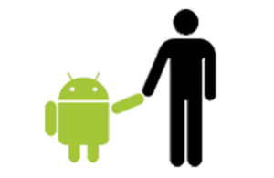

Provavelmente você sabe que o sistema operacional ANDROID mantido pelo Google é
um dos mais utilizados para dispositivos móveis em todo o mundo. Mas tavez você não saiba que o seu
simpático mascote tem um nome e uma história muito curiosa? Pois acompanhe esse artigo para aprender muita
coisa sobre esse robozinho.
A PRIMEIRA VERSÃO
A primeira tentativa de criar um mascote surgiu em 2007 e veio de um desenvolvedor chamado Dan Morrill . Ele conta que abriu o Inkscape
(software livre para vetorização de imagens) e criou sua própria versão de robô. O objetivo era apenas
personificar o sistema apenas para a a sua equipe, não existia nenhuma solicitação da empresa para a criação
de um mascote.
Essa primeira versão bizarra até foi batizada em homenagem ao seu criador: seriam os
Dandroids.
Surge um novo mascote
A ideia de ter um mascote foi amadurecendo e a missão foi passada para uma profissional da área. A
ilustradora Russa Irina Blok, também funcionária do Google, ficou com a missão
de representar o pequeno robô de uma maneira mais agradável.
A ideia principal da Irina era representar tudo graficamente com poucos traços e de forma mais chapada. O
desenho também deveria gerar identificação rápida com quem o olha. Surgiu então o
Bugdroid, o novo mascote do Android.

A principal inspiração para os traços do novo Bugdroid veio daqueles bonequinhos que ilustram portas de
banheiro para indicar o gênero de cada porta. Conta a lenda que a artista estava criando em sua mesa no
escritório do Google e olhou para o lado dos banheiros e a identificação foi imediata: simples, limpo,
objetivo.